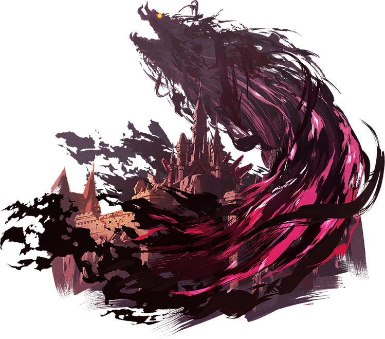
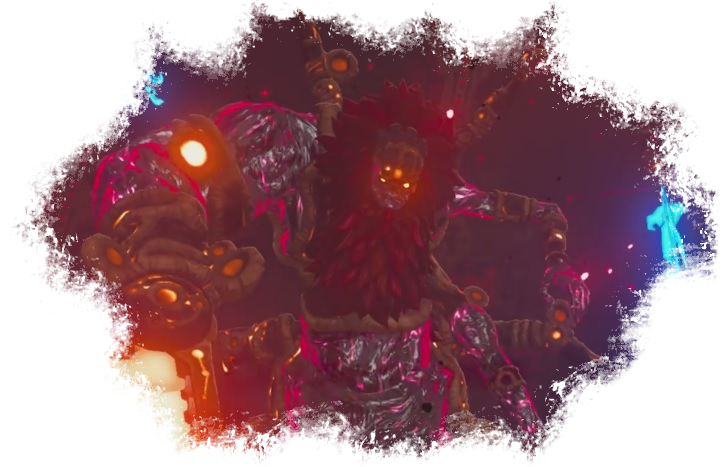
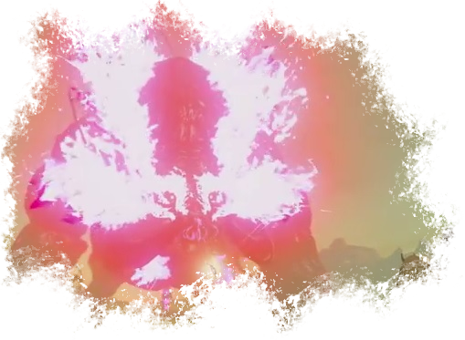

Le Fleau Ganon

Ganon est le principal antagoniste de Breath of the Wild. Entité maléfique, il est le mal que doivent combattre Link et Zelda.
Selon Urbosa, les légendes racontent qu'au commencement, Ganon est issu du peuple Gerudo. L'Homme, motivé par le pouvoir et par la haine, voulait prendre le contrôle du Royaume. Vaincu par le héros et l'incarnation d'Hylia, il s'est réincarné, encore et encore, pour parvenir à ses fins.
Ganon, Link et Zelda sont liés par une malediction: les réincarnations du Héros et de la déesse doivent combattre le fléau qui veut prendre le contrôle d'Hyrule. Il y a des millénaires, les ancêtres de nos héros étaient parvenus à repousser le mal. Malheureusement, lorsque celui-ci est revenu à la vie, il est parvenu à inverser la tendance et prendre le contrôle des armées royales. Si Zelda n'était pas intervenue pour emprisonner le démon au sein du château, il aurait remporté la guerre.
Le monstre est parvenu à se défaire des quatre prodiges, retourner contre Hyrule les gardiens et les créatures Divines, tuer Link et corrompre certaines zones de la région grâce à sa malice, substance violette invulnérable et hautement corrosive. Au fur et à mesure de sa lutte magique contre une Zelda qui se vide de ses forces, Ganon, lui, les recouvrent et devient de plus en plus difficile à contenir.
Lors de son retour, le fléau a dévasté la région entière et tué une très grosse partie de la population d'Hyrule. Cent-ans après, la nature a repris ses droits et Link se réveille dans un monde post-apocalyptique redevenu sauvage.
Le Ganon réincarné que Link doit combattre n'a plus rien d'humain. Il ressemble à une araignée géante avec une tête humanoïde, Une chevelure et une longue barbe rousse, rapellant fortement Ganondorf, sa forme humaine. Le monstre est également pourvu de tentacules de gardiens.
Il manipule une gigantesque épée de flammes ainsi qu'une lance de glace. Il peut également utiliser un canon projettant de l'énergie. Enfin, il a trois mains au niveau des épaules qui utilisent respectivement des cisailles, des griffes et une épée.

Le combat entre Link et Ganon se déroule de manière différente selon l'avancement dans le jeu. Si toutes les créatures divines ont été délivrées, alors elles attaqueront jusqu'à lui retirer 50% de sa vie. Si elles n'ont pas toutes été libérées, le fléau se battra aux côtés des monstres invaincus dans les créatures et sa vie sera moins impactée. Enfin, si aucune créature n'a été libérée, alors ses quatre ombres seront avec lui et il aura l'intégralité de sa vie.
Une fois la forme d'araignée vaincue, le monstre parvient à sortir du château et se transforme en gigantesque Sanglier imprégné de malice aux flammes violettes. Zelda explique que Ganon ne peut peut plus reprendre forme humaine. Le monstre se tenant en face du héros est donc une matérialisation de sa haine, aussi pure que furieuse. Haut comme une petite montagne, Link devra l'affronter à cheval.

La princesse remet au jeune homme l'arc de lumière. Cet arc est inefficace contre le fléau, protégé par ses pouvoirs. Heureusement, Zelda peut utiliser le peu de forces qu'il lui reste pour faire apparaître des points faibles que Link peut viser.Après plusieurs tirs, le héros peut enfin décocher une ultime flèche dans la tête du monstre et la princesse parvient à utiliser les pouvoirs du sceau de la Déesse pour le faire disparaître définitivement.